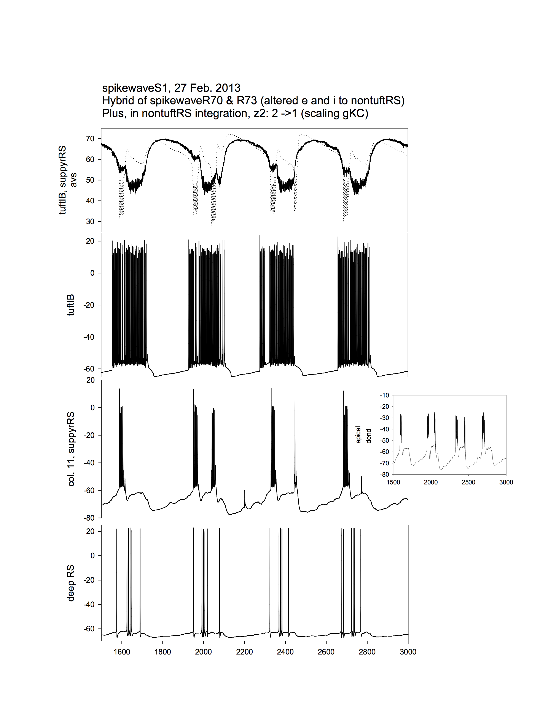
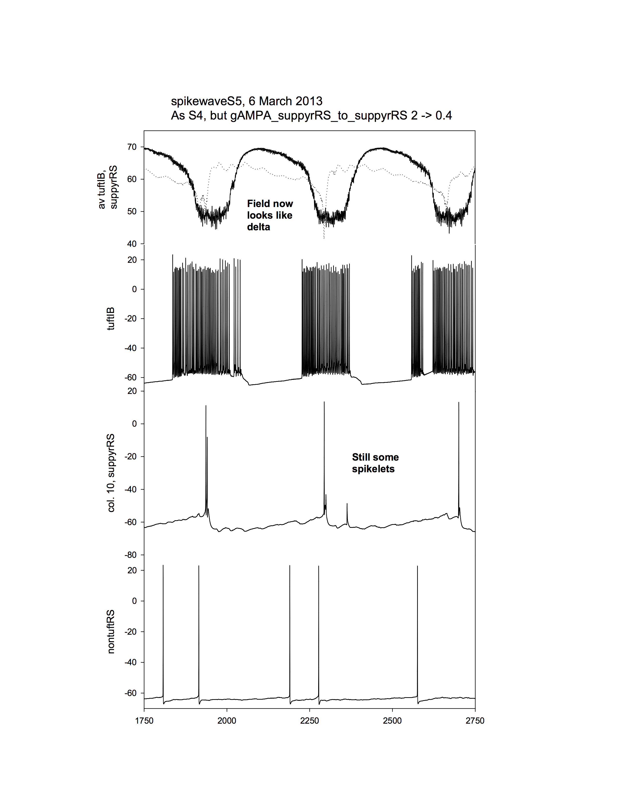

This is the readme for the models associated with the paper:
Hall S, Hunt M, Simon A, Cunnington LG, Carracedo LM, Schofield IS, Forsyth R, Traub RD, Whittington MA (2015) Unbalanced Peptidergic Inhibition in Superficial Neocortex Underlies Spike and Wave Seizure Activity. J Neurosci 35:9302-14
These files were contributed by Roger Traub.
The fortran can be compiled with the makefile however requires an
object file gettime.o which is available elsewhere.
Here are some images of model results provided by Roger Traub:

